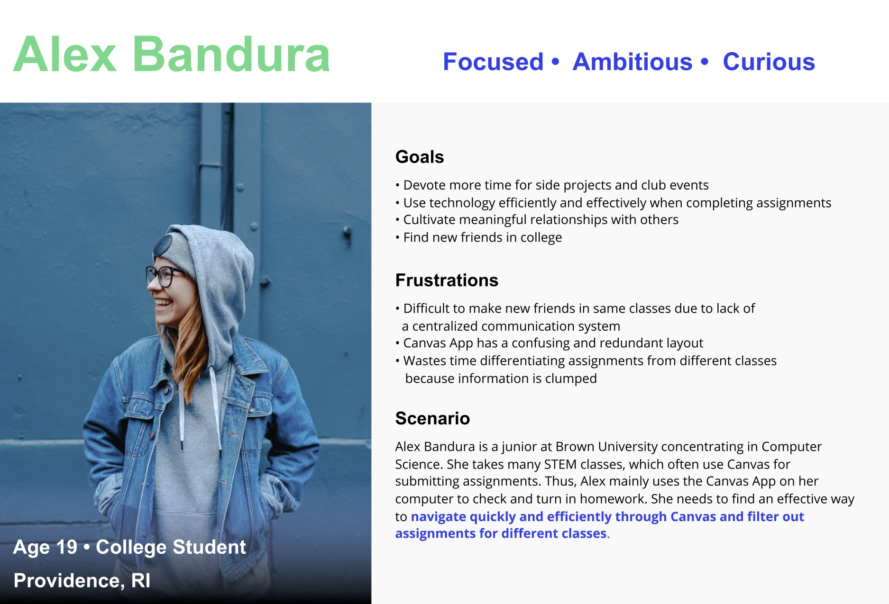
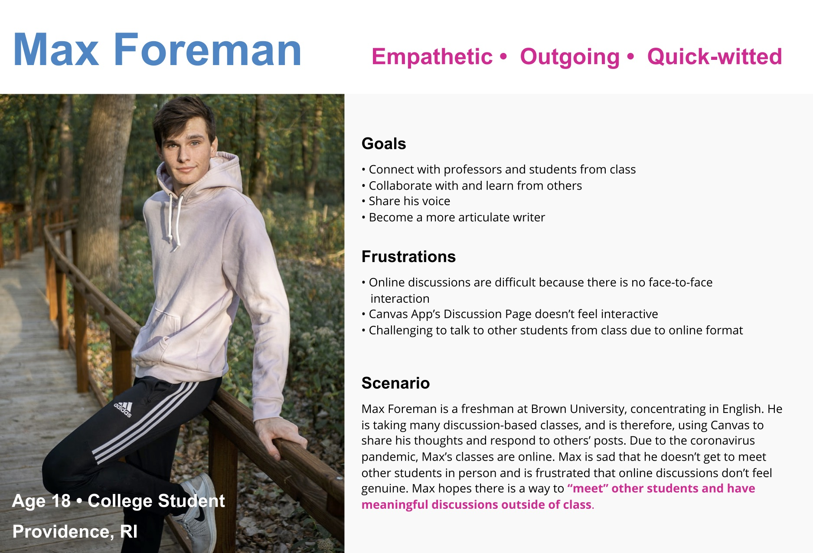
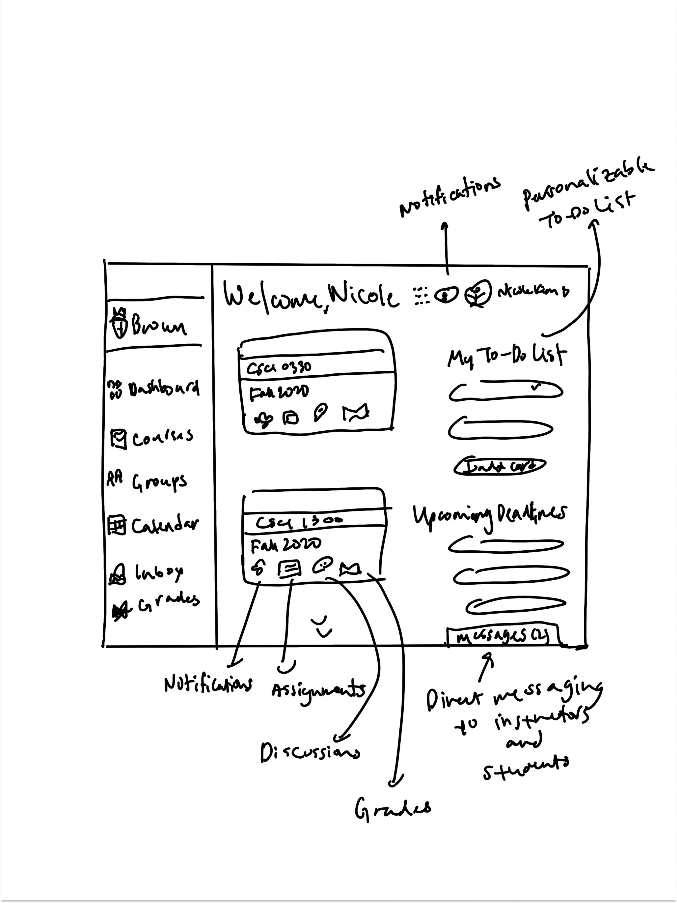
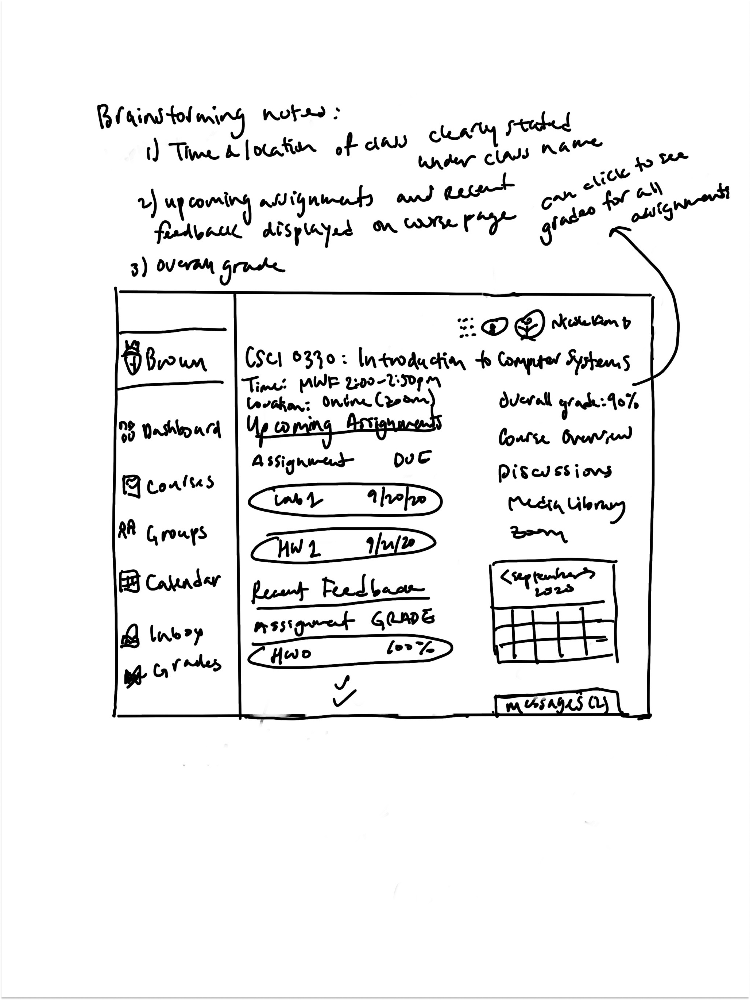
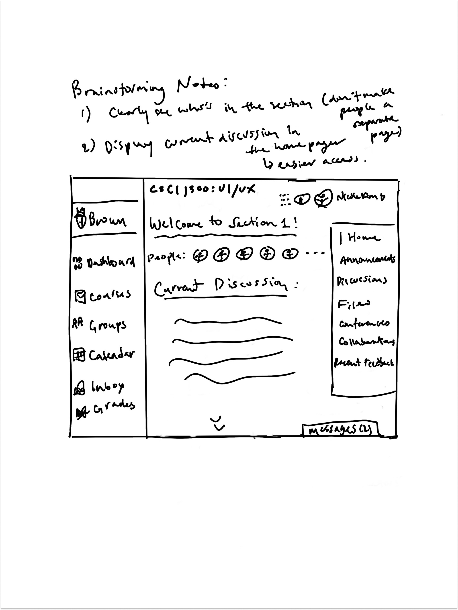

User Personas:
To empathize with users who may use different features in Canvas,
I created two user personas: Alex Bandura, a CS student at Brown University,
who uses Canvas to check and submit assignments and look at deadlines, and Max Foreman,
an English student at Brown University, who uses Canvas to check and submit assignments,
answer discussion questions, and connect with other students.


Ideation & Initial Sketches:
Dashboard Page:

Personalized To Do List:
The Canvas app currently has a general-purpose to do list that includes all upcoming assignments.
It can't be edited, and thus is frustrating to use since some assignments may have priority over others.
A personalized to do list will allow users to add or delete things on the list. Once a task is finished,
users can click on the check mark and the task will be marked as done. They can also move the to do cards
around to prioritize certain tasks.
Welcome Header:
The welcome header displays "Welcome, (name)," making the account look and feel more personal.
Upcoming Deadlines section:
This allows students to quickly check upcoming assignments.
Direct Messaging:
This feature is handy for students to communicate with instructors and other students.
Students don't have to write an email to instructors; instead, they can send a message through Canvas.
Accessible Icons:
Even though Canvas already has some icons, such as the assignment icon, under each class,
it will be more convenient for students if there are other icons as well. This includes the grade icon,
which will allow students to check their grade for a specific class without having to click on the class first.
Course Page:

Time and location clearly stated:
In the beginning of the semester, I often forget the time and location of my classes.
Due to Covid-19, I am staying at home on the West Coast, which makes time even more
confusing since my schedule at Brown is 3 hours ahead. It would be convenient if each
class lists the time and location right on the course page.
Upcoming assignments and recent feedback:
Most of the time, the reason that I am on Canvas is to look at upcoming assignments and feedback.
Thus, these two should be displayed directly on the course page for easy navigation.
Overall Grade:
Now, students don’t have to click on the grades section to check their course grade.
Group Page:

Find people in the same section:
Right now, the user is unable to see who is in the section unless they click on the people section in the tab.
Now, all the people in the section are displayed on the group page so that students can check who else is in the same section.
Current Discussion:
The current discussion is in the section page. This allows for easy navigation.
Distinguish between replies and posts:
On the Canvas discussion page, it is challenging to tell the difference between replies and stand-alone posts.
When a post has multiple replies, it takes a long time to scroll through each reply. The redesign allows users
to click and see replies for each post. Users may also see replies to their own post for a specific discussion by clicking
"New Post Replies."